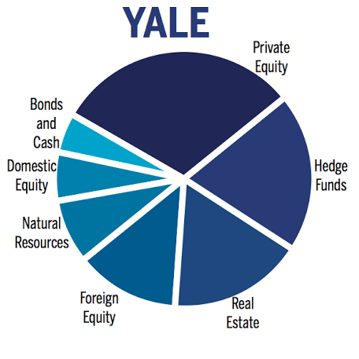
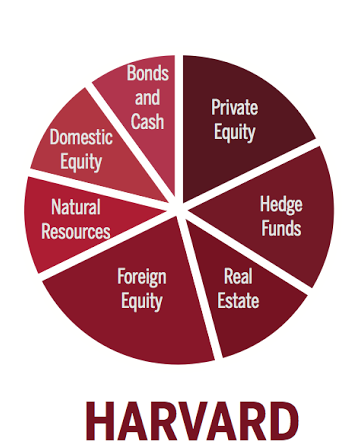

By
Larry Milstein · Staff Reporter
Web design by The Yale Daily News
Illustrations by Zishi Li
Even after the scoreboard buzzes on Saturday afternoon, the rivalry between Harvard and Yale will be far from over. Rather, the competition simply shifts from the yard line to the bottom line.
For the past three decades, Harvard and Yale have been competing not only in touchdowns, but also in returns. And as the institutions with the two largest endowments in the nation, investment performance is more than a sport — it is a multi-billion dollar game.
At the end of the fiscal 2014 year — the period ending on June 30, 2014 — Harvard’s endowment remained the largest in the country at $36.4 billion. Yale’s endowment stood at an institutional nominal high of $23.9 billion.
“There is always a rivalry between money managers across the industry — it is a competitive endeavor by nature, so you will always get a rivalry among asset managers regardless,” MIT finance professor Andrew Lo ’80 said. “But the Harvard and Yale rivalry goes beyond that, so I wouldn’t be surprised if there was a certain degree of rivalry with the endowments as well.”
The Scoreboard
Although Yale has not won The Game since 2006, the Yale Investments Office has consistently beat its Cantab rival — the Harvard Management Company — over the past two decades.
Since 1994, Yale has seen an average annual return of 13.9 percent, well above HMC’s 12.3 percent. Both Harvard and Yale outperformed the estimated 9.2 percent average return of university endowments over the same period. Over the past 10 years, that divide has only grown, with Yale’s average investment returns per year standing at 11 percent compared to Harvard’s 8.9 percent.
“These differences are significant,” said Richard Hesel, a principal at Art and Science Group, LLC, a firm that advises colleges and nonprofits. “When you have endowments at this magnitude, a one-percent swing is $400 million of revenue — not a small amount of money and that has large consequences.”
Still, NYU Stern School of Business finance professor David Yermack said the data for investment returns often fluctuate, so there would need to be huge differences — not just a few percentage points — for it to be statistically significant.
Wick Sloane SOM ’84, a columnist for the website Inside Higher Ed, said irrelevant of actual nominal differences, it is the perception that matters most.
“In this game, with such staggering amounts of money, these returns just aren’t that far apart,” Sloane said. “[But] in the endowment world, they may be life and death.”
Still, the price tag on a endowment provides only a glimpse into the investment offices of these schools. The true story of the Yale and Harvard endowments lies behind the reported numbers.
“There is always a rivalry between money managers across the industry — it is a competitive endeavor by nature, so you will always get a rivalry among asset managers regardless. But the Harvard and Yale rivalry goes beyond that."
The Hall of Fame
In 1985, David Swensen, a young Wall Street executive at Lehman Brothers came to the Elm City, tasked with turning around Yale’s $1.3 billion endowment.
Swensen is credited with pioneering the “Yale Model,” which aims to allocate investments towards alternative or illiquid investments — including private equity, real estate and natural resources — while also diversifying the portfolio to decrease risk.
Provost Benjamin Polak described Swensen as a “moral force,” someone who is an uncanny judge of both character and investment opportunity.
“The reason Yale has done so well boils down to two words: David Swensen,” he said.
Swensen declined to be interviewed for this article.
But like all protagonists, Swensen has a rival. Jack Meyer started running the Harvard Management Company in 1990. Before stepping down in 2005, he grew the endowment from $4.7 billion to $25.9 billion.
Hesel said that prior to these two leaders, the operative word in endowment investing was “conservatism.” However, Yale and Harvard began to shift the previously accepted norms and as a result, transformed the industry.
“They both were concurrently radicalizing the way that institutions investments have been handled prior to their taking over their respective organizations,” said Daniel Wallick, an institutional investment strategist at Vanguard.
Throughout their tenures, Swensen and Meyer produced very similar endowment returns. According to the released annual reports between 1990 and 1998, Yale’s returns were higher than Harvard’s for five out of the nine years.
In 2005, Meyer stepped down from his role as chief executive officer of HMC to start his own hedge fund, Convexity Capital Management. But this was only the start of trouble for Harvard’s endowment over the next few years — and to a certain extent, Yale’s endowment as well.
The Sack
“The fiscal year that ended June 30, 2009 marked the close of what was very likely the most challenging period in modern times for the financial markets, as well as for the Harvard portfolio,” current HMC CEO Jane Mendillo ’80 SOM ’84 wrote in the Harvard annual report that year.
In the 2009 fiscal year, Harvard saw a 27.3 percent drop in its endowment, the largest drop in over 40 years. Yale’s endowment suffered critically as well. According to its 2009 Endowment Report, Yale’s assets lost nearly a quarter of their value, leading to a decline of $5.6 billion.
As a result, Harvard had to borrow cash. In 2008, the university sold $1.5 billion in taxable bonds and $1 billion in tax-exempt bonds, which freed an additional $2.5 billion in cash.
“They had that disastrous cash exposure during the recession,” Hesel said. “Having Harvard borrowing to fund operations [was] astounding.”
Although Yale was not as cash-strapped as its rival, the fall in the endowment led to widespread criticism of Swensen’s investment strategy. Some financial experts claimed that the “Yale Model” was broken and should be retired.
“The endowments, Yale, Harvard and all didn’t lose so much because of the markets, they lost that much because they were invested is risks that were way, way too high,” Sloane said. “If they’d had the endowments in treasuries, they would have had the same amount of money before and after the crash.”
Yermack said there are still lessons to learn from the financial downturn and its impact on the Yale and Harvard endowments.
He echoed Sloane’s sentiments that both schools paid a hefty price for heavily investing in risky asset classes like private equity. Yermack added Yale is still feeling the impact of the severe budget cuts across the University.
“The impact of the events of 2008-2009 will not be reversed overnight,” Mendillo wrote in her 2009 letter. “Regaining the market value lost as a result of the recent global economic crisis will take time.”


The Playbook
Fast-forward six years, and the financial crisis appears as a faded scar on Harvard and Yale’s record, a significant dip in a graph of otherwise rising lines.
Still, some contend that the asset allocations of both institutions may still bear the marks from the recession. In fact, it may be the explanation for why HMC has not returned to its former glory under Meyer.
Harvard may be working to avoid a situation where the school has low cash reserves, Wallick said. Therefore, he said Harvard’s managers might have constructed the current portfolio in a way to make funds more accessible, hedging against a similar drop in the value of illiquid assets that occurred in 2008.
“You can think of it as an insurance policy,” Wallick said. “They decided to take more insurance, in this case buying more liquid assets.”
Compared to Yale, Harvard has placed more funds in domestic equity and lower risk bonds and cash. Yale has relatively higher investments in private equity and hedge funds. Lo said that historical data indicates that taking on more illiquid investment tends to carry a long-term reward, which may be why Yale’s allocation has been performing relatively more strongly.
“Therefore, it becomes a question of asset allocation that drives the results, so if Yale bets big on private equity and that does well, then returns will be higher,” Yermack said.
But uncertainty remains. Despite Yale’s outperformance over the past two decades, many argue the ball can still be turned over.
“It is absolutely possible for Harvard to beat Yale again, there is nothing structural that prevents that from becoming a reality,” Wallick said.